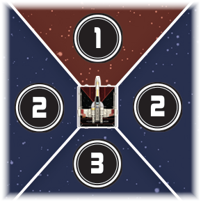
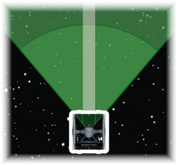
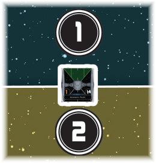
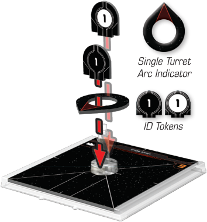
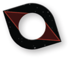

ARC
An arc is an area formed between the lines created by extending hash marks or arc lines printed on a ship token to range 3. A ship is in an arc if any part of its base is inside that area.
- Arcs are measured beyond the base of ships. The portion of any object that lies beneath a ship is not in any of those ship’s arcs.
Standard Arcs
There are three types of standard arcs created from the crossed diagonal arc lines:

-
Front arc (): This arc projects in the same direction that the ship is facing. Most ships have a primary weapon. Almost all , , and weapons use this arc.
-
Side arcs (, ): These arcs are on the left () or right () side of ships.
-
Rear arc (): This arc projects in the opposite direction that the ship is facing. Some ships have a primary weapon.
Bullseye Arc
Inside of the front arc, each ship has a bullseye arc.

Bullseye arc (): This arc is found inside the . If something is in a ship’s , it is also in its .
-
The is the width and length of the range ruler.
-
There is no intrinsic effect when a ship attacks a ship in its , but card abilities may refer to it.
Full Arcs
There are two full arcs that use the midway line instead of the printed arc lines.

-
Full front arc (): This arc covers all of the area in front of the ship. Some ships have primary weapons.
-
Full rear arc (): This arc covers all of the area behind the ship.
Using the , , and extending the midway line to range 3, the following phrases are used to express specific spacial relationships between ships.
-
Behind: If ship A is in the of ship B and ship A does not cross the midway line of ship B, then ship A is behind ship B.
-
In front of: If ship A is in the of ship B and ship A does not cross the midway line of ship B, then ship A is in front of ship B.
-
Flanking: If ship A crosses the midway line of ship B, then ship A is flanking ship B.
Turret Arcs
Unlike other arcs, some weapons use turret arc indicators to select arcs. There are two types of turret arc indicators: single turret () and double turret (). During setup, a ship with a primary (or special) or weapon adds the corresponding turret arc indicator to its base.

The turret arc indicator points toward one of the ship’s four standard arcs. The standard arc that the turret arc indicator is pointing toward is a in addition to still being a standard arc. While a ship performs a attack, it can attack a target that is in its arc.
A ship with a double turret arc indicator has two in opposite directions.
A ship can adjust which standard arc(s) that its turret arc indicator is pointing towards by using the rotate () action.

Double Turret Arc Indicator
Huge ships have additional rules for turret arc indicators (see Appendix: Huge Ships).
Firing Arcs
A ship’s firing arcs include all shaded arcs on the ship’s ship token plus all arcs, if any.
- If an upgrade card gives a ship a arc or primary weapon with a specified arc, those arcs are also firing arcs.